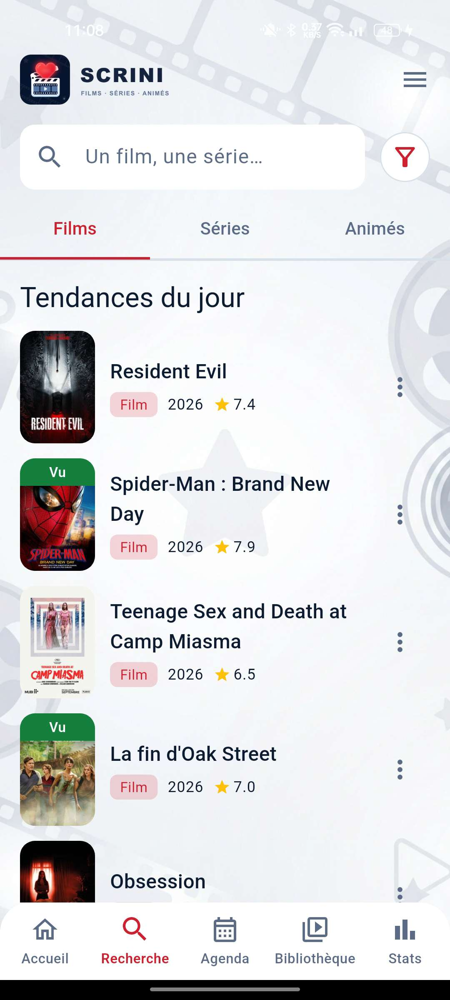

Onde você parou mesmo?
Acompanhe os filmes, as séries e os animes que você assiste, e seja avisado dos próximos lançamentos.

Estreias nos cinemas
O que está chegando aos cinemas perto de você.
Filtros que ajudam de verdade
Em breve, no ar — e dá para combinar.
Calendário e alertas
Os lançamentos que interessam a você, e uma notificação no dia em que saem.
Filmes, séries, animes
Os três no mesmo lugar, acompanhados episódio por episódio.
Também no app
- Acompanhamento de séries
- Listas personalizadas
- Rever o que você já viu
- Tela inicial personalizável
- Estatísticas
- Tema escuro ou claro
- Importação de outros apps
Em breve
- Mais recursos sociais: amigos e comentários
- Medalhas e conquistas
O app

Busca

Biblioteca

Estatísticas
Seus dados são seus e de mais ninguém
O Scrini não mostra anúncios e não vende seus dados. Sua biblioteca pertence a você — dá para exportá-la em uma planilha ou excluir sua conta e tudo o que ela contém.
Política de privacidade